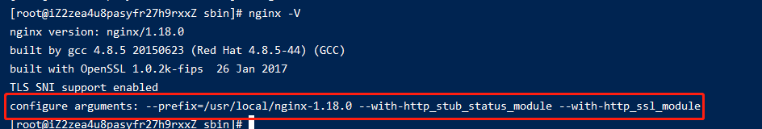
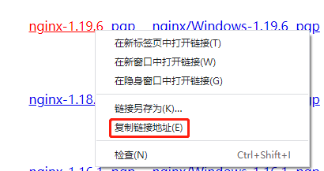
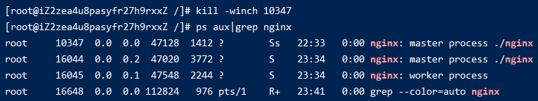

006-nginx的优雅升级
现有nginx是在/usr/local/nginx-1.18.0，版本为1.18.0。
已经在线上跑了一段时间，现在准备将其升级到1.19.6
升级nginx其实就是升级
bin/nginx这个二进制文件，为了防止出错，先将该二进制文件备份下cd /usr/local/nginx-1.18.0/sbin cp ./nginx ./nginx.bak查看下以前安装nginx执行过的参数
nginx -V
一定要记住这个参数，最好找个地方记下
- 下载
nginx 1.19.6

# 下载
wget http://nginx.org/download/nginx-1.19.6.tar.gz
# 解压
tar -zxvf nginx-1.19.6.tar.gz
- 配置
把之前查看到的参数配置拿过来执行下
cd nginx-1.19.6
配置
./configure --prefix=/usr/local/nginx-1.18.0 --with-http_stub_status_module --with-http_ssl_module
编译
make
执行完`make`后，会在`nginx-1.19.6/objs`里面生成一个二进制文件`nginx`，把这个`nginx`替换原来运行的nginx二进制
```shell
cd nginx-1.19.6/objs
# -f 强制复制
cp ./nginx /usr/local/nginx/sbin/nginx -f
- 执行
# 查看进程 ps aux|grep nginx
kill -usr2 10347

可以看到执行完后，会启动一批新的进程来执行master和work进程，旧的master和work进程依旧还在
执行
```shell
kill -winch 10347

就可以看到旧的word进程已经都没有，仅留一个旧的master进程在，这个是为了反正出问题，可以给我们回退的
如果确定没有问题了，就可以执行命令把旧的进程删掉
kill 10347